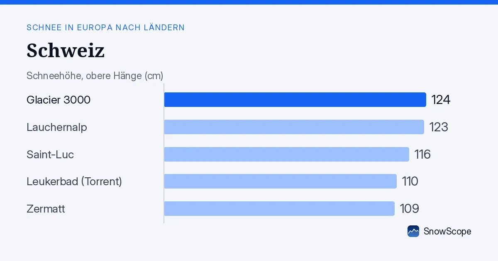

Schweiz: Gletscher voraus, Glacier 3000 bei 124 cm
Glacier 3000 liegt heute bei 124 cm Schneetiefe, deutlich vor den anderen Hochgebirgsresorts des Landes. Die Gletscherzone hat in diesem frühen Saisonansturm den meisten Schnee abbekommen, mit 128 cm in den letzten drei Tagen.
Die Live-Schneeprognose für Glacier 3000 in der SnowScope-AppSchneehöhen, Pulverschnee-Alarme und 3D-Karte, gratis.
Warum Gletscher im November gewinnen
Die Höhe ist alles in der frühen Saison. Glacier 3000 liegt auf 2.931 m und sitzt in der Zone, wo Schnee liegen bleibt und sich aufbaut. Die Walliser Alpen, wo Glacier 3000 liegt, haben in 72 Stunden 192 cm abbekommen, deutlich mehr als jede andere Region in der Schweiz. Das Berner Oberland mit der Lauchernalp auf 3.084 m folgt mit 119 cm in derselben Periode.
Die Schneegrenze liegt heute bei 1.200 m, was bedeutet, dass die unteren Täler und mittleren Höhen noch meist schneearm sind. Bei 2.000–2.500 m beträgt die mittlere Tiefe 16 cm und die Bedeckung ist vollständig. Über 2.500 m liegt der Durchschnitt bei 29 cm. Gletscher liegen definitionsgemäss über diesen Höhen und fangen den ersten echten Schnee der Saison auf.
| Skigebiet | Schneehöhe | Neuschnee, 72 h | Erwartet, nächste Tage | Gipfel |
|---|---|---|---|---|
| Glacier 3000 | 124 cm | 128 cm | 86 cm | 2.931 m |
| Lauchernalp | 123 cm | 86 cm | 68 cm | 3.084 m |
| Saint-Luc | 116 cm | 84 cm | 52 cm | 2.973 m |
| Leukerbad (Torrent) | 110 cm | 82 cm | 61 cm | 2.596 m |
| Zermatt | 109 cm | 100 cm | 50 cm | 3.872 m |

Fünf Resorts mit dem meisten Schnee jetzt
Glacier 3000 führt mit 124 cm. Die Lauchernalp im Berner Oberland hält 123 cm auf 3.084 m. Saint-Luc im Wallis sitzt bei 116 cm. Leukerbad (Torrent) liegt bei 110 cm, und Zermatt, der berühmteste Name, hat 109 cm. Alle fünf sind über 2.500 m.
Was in den nächsten Tagen zählt: Glacier 3000 wird in den nächsten drei Tagen noch 86 cm dazugewinnen. Die Lauchernalp erwartet 68 cm mehr. Das sind keine endgültigen Zahlen – die Modellläufe zeigen, wie viel Neuschnee das Wetter bringt, und das kann sich verschieben. Aber der Trend ist klar: hohes Gletschergelände wird vor tieferen Resorts davonziehen.

Schneebänder: wer bekommt was nach Höhe
Unter 1.000 m fast kein Schnee. Zwischen 1.000 und 1.500 m sind nur 59% der Fläche bedeckt und die mittlere Tiefe beträgt gerade 2 cm. Das ist die Zone, wo viele Talresorts liegen, und sie sind noch sehr begrenzt.
Der Sprung kommt bei 1.500 m. Hier steigt die Schneebedeckung auf 93% und die Tiefe erreicht im Durchschnitt 10 cm. Bei 2.000 m und darüber ist die Bedeckung vollständig. Diese scharfe Linie – das Band zwischen 1.500 und 2.000 m – ist der Ort, wo die Saison wirklich beginnt. Alles darüber baut sich schnell auf. Alles darunter wartet noch.
Landesweite Schneebedeckung wächst schnell
Die Schneebedeckung in der modellierten Fläche ist von 16.170 km² vor sieben Tagen auf 19.900 km² heute gestiegen. Das sind 3.730 km² neuer weisser Fläche in einer Woche. Von gestern bis heute betrug der Zuwachs 1.740 km². Der Schneeanteil der Schweiz liegt jetzt bei 64%, gegenüber 52% vor einer Woche.
Von unseren 280 verfolgten Resorts haben 224 jetzt messbaren Schnee. Anfang November brachte dünne Bedeckung und kahle Stellen. Der Ansturm dieser Woche hat das Bild verändert. Trotzdem scheinen noch Felsen auf vielen tieferen Hängen durch, und dünner Schnee kann sie verbergen. Frühjahressaisonbedingungen bedeuten sorgfältige Linienführung, besonders Abseits der Pisten.
Was kommt als nächstes
Morgen, 22. November, ist der schneereichste Tag in der Vorhersage. Das Modell zeigt 38 cm in Spitzenbereichen. In den nächsten drei Tagen werden die Walliser Alpen und das Berner Oberland die stärksten Fälle sehen. Über sieben Tage könnte das Land an den höchsten Punkten weitere 89 cm dazugewinnen.
Ende November zeigt die zweite Woche der Daten (28. November bis 4. Dezember), dass der Schneefall nachlässt. Für diese Woche sind nur 24 cm prognostiziert, gegenüber 55 cm in der ersten vollständigen Woche voraus. Der Ansturm endet, und die Saison beruhigt sich in einem langsameren Tempo.
Wie die Schweiz sich vergleicht
Österreich im Osten hat 44% weisse Bedeckung und sein Anführer (Rifflsee) hält 120 cm. Frankreich im Westen liegt bei 14% weisse Bedeckung mit Les Arcs bei 166 cm, aber das Bild dort ist uneinheitlich. Die Schneebedeckung der Schweiz von 64% macht sie zu diesem Datum weit voraus. Der Gletschergürtel ist der Grund. Österreich hat auch Gletscher, aber Schweiz' hohes Gelände fängt den ersten grossen Sturmanstieg der Saison voller auf.
Tipps für Skifahrer
- Bleib jetzt auf Pisten über 2.000 m. Unter 1.500 m ist der Schnee dünn (2–10 cm mittlere Tiefe) und Felsen sind freigelegt. Glacier 3000 und Lauchernalp sind sicherere Frühjahreswahlmöglichkeiten als tiefere Täler.
- Frischer Schnee wird morgen (22. November) in Spitzenzonen 38 cm dazufügen. Erwarte weiche Bedingungen und Lawinengefahr. Überprüfe das offizielle Lawinenbulletin vor jeglichem Skifahren abseits der Pisten.
- Die nächsten drei Tage bevorzugen die Walliser Alpen (Glacier 3000, Zermatt, Saint-Luc) gegenüber tieferen Resorts. Wenn du jetzt tiefen Schnee möchtest, geh hoch und geh südlich.
- Plan für weitere 86 cm bei Glacier 3000 innerhalb von drei Tagen. Die Frühjahresseasontiefe wird an Gletscherresorts schnell zunehmen, aber tiefer unten dünn bleiben.
- Anfang Dezember wird der Schneeeingang deutlich fallen. Das ist das Zeitfenster zum Fahren in Tiefschnee in den hohen Zonen, bevor das Tempo sinkt.
Zu diesen Zahlen
Die Schneehöhen der Skigebiete sind der meiste Schnee in den oberen Hängen laut SnowScope-Schneemodell (etwa 1 km, Lauf vom 20. November); es sind Schätzungen für eine Fläche, keine Messung an einem Punkt. Werte von Messstationen sind Messungen am angegebenen Tag. Prognosen können sich ändern. Lies vor dem Freeriden immer den offiziellen Lawinenlagebericht.
Diesen Bericht zitieren
Für Forschung, Lehre oder Presse: Zahlen und Grafiken sind unter CC BY 4.0 mit dieser Quellenangabe frei nutzbar.
SnowScope (2026), Schweiz: Gletscher voraus, Glacier 3000 bei 124 cm, https://snowscope.app/blog/de/2026/11/switzerland-glaciers-lead-20-november-2026.html, abgerufen am 2026-11-20
SnowScope (Atlas Labs). (2026, November 20). Schweiz: Gletscher voraus, Glacier 3000 bei 124 cm. SnowScope snow reports. https://snowscope.app/blog/de/2026/11/switzerland-glaciers-lead-20-november-2026.html
BibTeX
@misc{snowscope2026switzerlandglacierslead2,
author = {{SnowScope (Atlas Labs)}},
title = {Schweiz: Gletscher voraus, Glacier 3000 bei 124 cm},
year = {2026},
month = nov,
howpublished = {\url{https://snowscope.app/blog/de/2026/11/switzerland-glaciers-lead-20-november-2026.html}},
note = {Published 2026-11-21 11:04 UTC; accessed 2026-11-20}
}· CC BY 4.0 · Methoden, Daten und Werkzeuge →
Glacier 3000: Schnee und Temperatur nach Höhe, dieser Winter vs letzter (Werkzeuge) →
Glacier 3000 folgen
Gratis: eine Nachricht, wenn Neuschnee kommt, und jeden Morgen die Vorhersage.